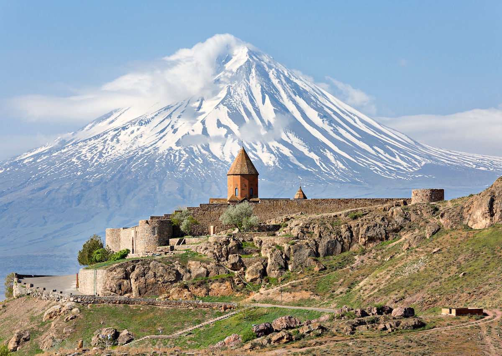
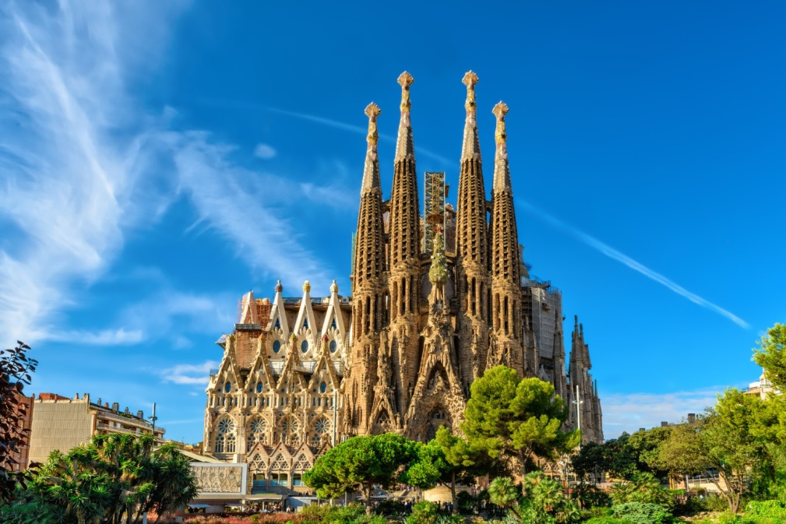

El meu estiu
Ha sigut un molt bon estiu. He aprofitat el temps per fer pinya amb la família i els amics, he anat a la platja a desconnectar i m'he clavat uns quants llibres que m'han aportat molt. Objectius complerts.
Els meus plans per Nadal
Per Nadal tinc pensat desconnectar de la rutina, seure a taula sense mirar el rellotge i gaudir de debò del caliu de la família. Tinc ganes d'aquelles sobretaules llargues que s'allarguen amb neules, torrons i converses tranquil·les; de retrobar-me amb els amics per fer unes quantes partides a algun joc de taula, riure una bona estona i compartir una tassa calenta mentre a fora es nota el fred d'hivern.
Compres que vull fer
Pàgines preferides
Imatges que m'agraden

